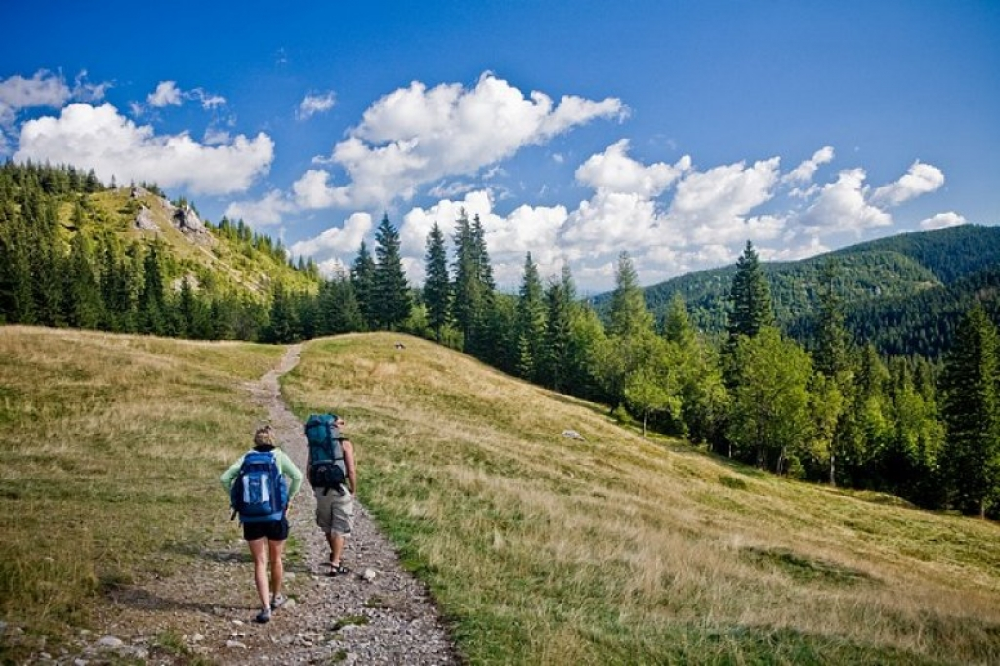
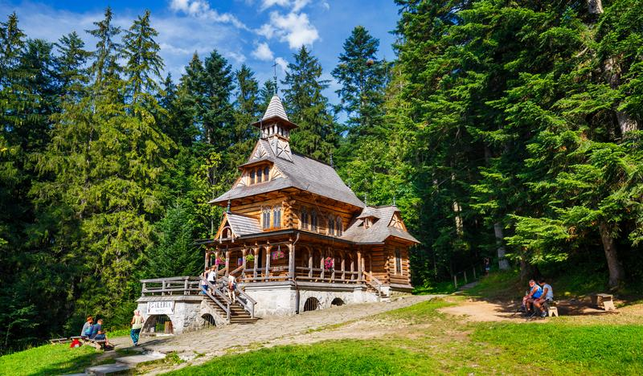
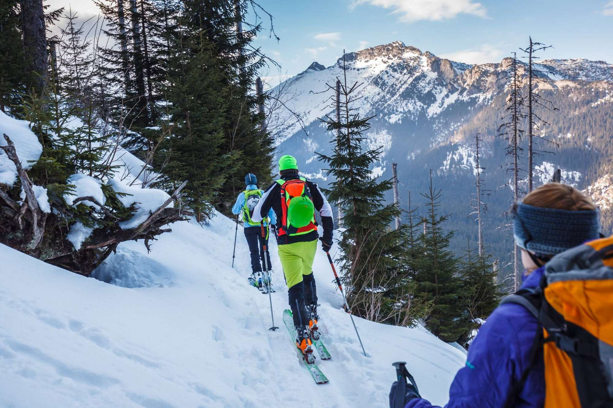

Opinie
Pan Michał to przewodnik, który potrafi zaciekawić młodzież oraz przekazać swoją pasję. Zdobyliśmy pod jego przewodnictwem Kasprowy Wierch. Młodzież była bardzo zadowolona z wycieczki. Do zobaczenia być może już za rok, na pewno jeszcze raz skorzystamy z usług Pana Michała.
Pan Michał - przewodnik z pasją. Wycieczka na Sarnią Skalę w bardzo sympatycznej atmosferze. Z przyjemnością powędrujemy raz jeszcze. Dziękujemy bardzo, Panie Michale
Polecam usługi przewodnickie pana Michała. Od samego początku spisał się świetnie. Pomógł w wyborze idealnej trasy dla grupy szkolnej. Podczas wędrówki, mimo początkowego deszczu, potrafił wszystkich zmotywować, miał dużą wiedzę przyrodniczą i geograficzną i chętnie się nią z nami dzielił. Wzbudził w uczestnikach zainteresowanie górami. Polecam każdemu.
Z państwem Beatą i Michałem moja klasa spędziła 3 dni w Tatrach. Było sympatycznie i ciekawie a przede wszystkim przewodnicy dostosowali poziom trudności tras do możliwości moich uczniów.Polecam gorąco:)
Dziękujemy Pani Beacie za przemiłą wycieczkę do Doliny Pięciu Stawów przez Świstówkę do Morskiego Oka. Pani Beata opowiadała bardzo ciekawie o Tatrach i motytowała tych, którzy nie mieli siły iść dalej. Na pewno jak jeszcze raz się wybierzemy to skorzystamy z wędrówek po górach z Panią Beatą. Jeszcze raz bardzo dziękujemy :)
Serdecznie dziękujemy za miłą wyprawę do Morskiego Oka. Będziemy długo pamiętać tę wyprawę w góry. Pani Beata jest wspaniałym człowiekiem i bardzo dobrym przewodnikiem. Gorąco polecamy wędrówki po górach z Beatą.
Wycieczki
WYCIECZKI GÓRSKIE

Z nami zwiedzisz doliny, wyjdziesz na przełęcze i zdobędziesz szczyty. Prowadzimy po Tatrach osoby indywidualne oraz wycieczki zorganizowane, początkujących oraz zawansowanych.
ZWIEDZANIE ZAKOPANEGO

Oprowadzamy po najciekawszych miejscach i obiektach miasta. Jeśli jesteś zwolennikiem niestandardowego sposobu zwiedzania, wycieczka po Zakopanem z licencjonowanym przewodnikiem na pewno Ci się spodoba! Pokażemy Ci miejsca, mało znane ale warte zobaczenia.
WYCIECZKI SKITUROWE

Prowadzimy wycieczki i szkolenia skiturowe w Tatrach. Dla początkujących oraz zawansowanych narciarzy. Wyjścia skiturowe połączone są z podstawowym szkoleniem lawinowym. Z nami bezpiecznie poznasz góry w zimowej porze roku. Wyjścia dla grup zorganizowanych oraz osób indywidalnych.